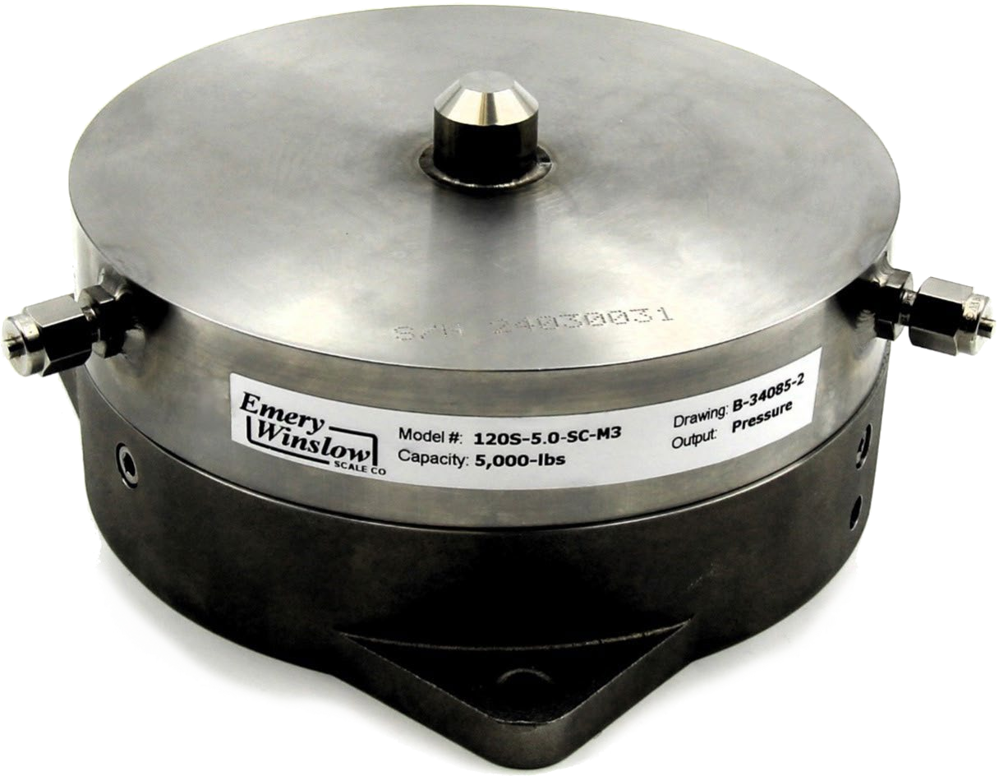
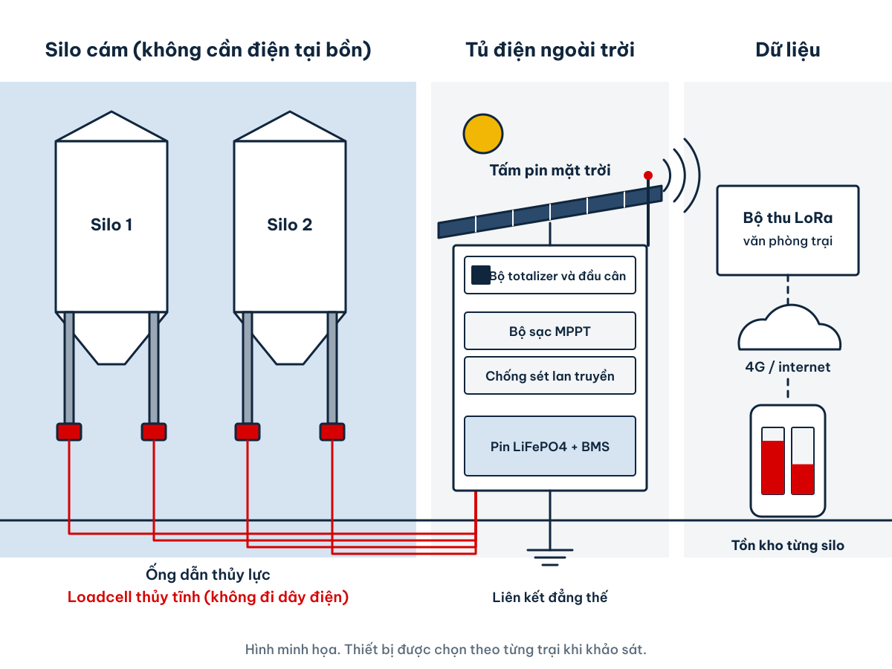
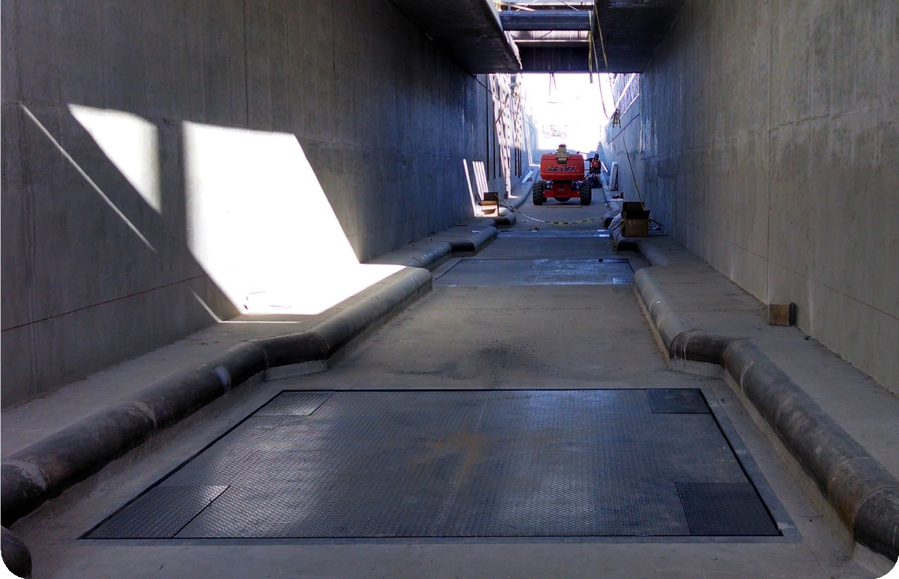
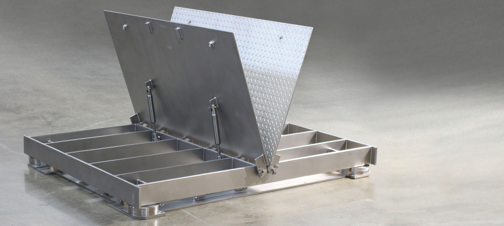

Emery Winslow Scale Company · Seymour, Connecticut, Hoa Kỳ
Hệ thống cân thủy tĩnh Emery Winslow
Cân bồn, cân xe tải và cân sàn dành cho những nơi loadcell điện tử thông thường nhanh hỏng: rửa áp lực, ngập nước, sét, xung điện và hóa chất ăn mòn.
- Không có linh kiện điện tử tại cân
- Loadcell thủy tĩnh inox
- Sản xuất tại Hoa Kỳ

Emery Winslow Scale · Dòng 136 LifeMount
Loadcell thủy tĩnh
Mọi hệ thống Emery Winslow đều bắt đầu từ loadcell này: kết cấu piston – màng bằng thép không gỉ, không điện tử, không hộp nối và không có gì dùng điện tại điểm cân. Tải trọng biến thành áp suất chất lỏng, và tín hiệu đi theo ống tới bộ tổng đặt trong phòng sạch, khô ráo.
“Never Replace Your Load Cells Again!”
Khẩu hiệu của chính Emery Winslow Scale Company cho dòng loadcell thủy tĩnh của hãng.

Vì sao chọn Emery Winslow
Cân thủy tĩnh là thế mạnh lâu đời của Emery Winslow. Những điểm khác biệt, theo chính nhà sản xuất:
Không có linh kiện điện tử tại cân
Loadcell thủy tĩnh chuyển khối lượng thành áp suất chất lỏng. Ống inox dẫn áp suất về bộ totalizer đặt ở khu vực sạch, khô; chỉ tại đó tín hiệu mới được chuyển sang dạng điện tử.
Chịu được nước, rửa áp lực, sét và xung điện
Theo nhà sản xuất, loadcell của hãng được thiết kế để chịu được các nguyên nhân gây hỏng thường gặp: nước, rửa áp lực cao, sét, xung điện, chuột cắn và nhiễu điện từ (RFI/EMI).
Kết cấu inox
Loadcell bằng inox (304, dòng 136 có thêm lựa chọn inox 316) và ống dẫn inox 316 cho khu vực ăn mòn và yêu cầu vệ sinh cao.
Cân chính xác ổn định, tuổi thọ dài hơn
Theo Emery Winslow, ở môi trường khắc nghiệt, cân thủy tĩnh giữ độ chính xác ổn định và có tuổi thọ dài hơn loadcell điện tử.
Chi phí vận hành thấp hơn theo thời gian
Ít phải gọi sửa chữa khẩn cấp, ít dừng máy và ít phải thay loadcell, theo nhà sản xuất.
Sản xuất tại Hoa Kỳ, từ năm 1868
Khởi nguồn từ A.H. Emery Company thành lập năm 1868; hợp nhất với Winslow (thành lập năm 1896) vào năm 1974. Sản xuất tại nhà máy ở Seymour, Connecticut, Hoa Kỳ.
Các điểm mạnh theo công bố của Emery Winslow Scale Company: tài liệu Hydrostatic Weighing Systems (15/06/2026), tờ dữ liệu dòng 120 và 136, và emerywinslow.com/about.
Công nghệ thủy tĩnh
Mọi hệ thống Emery Winslow Scale dùng loadcell thủy tĩnh: tải trọng thành áp suất chất lỏng, phần điện tử đặt trong phòng sạch, cách xa bàn cân.

Về nhà sản xuất
Emery Winslow Scale Company sản xuất hệ thống cân thủy tĩnh tại Seymour, Connecticut, Hoa Kỳ. Loadcell của hãng không chứa linh kiện điện tử: tải trọng được chuyển thành áp suất chất lỏng, ống inox dẫn áp suất về bộ totalizer đặt ở khu vực sạch, và chỉ tại đó mới được chuyển thành tín hiệu điện tử cho đầu cân.
HearS cung cấp các hệ thống Emery Winslow cho khách hàng công nghiệp tại Việt Nam; đội ngũ của chúng tôi hỗ trợ chọn thiết bị, thiết kế dự án và lắp đặt. Các trang dưới đây giới thiệu những giải pháp Emery Winslow mà HearS ưu tiên cung cấp tại Việt Nam.
Cân bồn, phễu và thiết bị chứa
136 Series LifeMount
Tải trọng lớn: hệ thống từ 5.000 đến 1.000.000 lb (khoảng 2,3 đến 454 tấn) cho bồn, silo, phễu và máy trộn.
Xem dòng sản phẩm: 136 Series LifeMount
120 Series LifeMount
Tải nhẹ và vừa: hệ thống từ 1.500 đến 18.000 lb (khoảng 0,7 đến 8,2 tấn), loadcell tự chặn cho bồn có khuấy.
Xem dòng sản phẩm: 120 Series LifeMount
Silo cám trang trại, không cần điện lưới
Loadcell thủy tĩnh không cần điện tại silo, nên chỉ một tủ điện năng lượng mặt trời nhỏ là đủ cấp điện cho cả hệ thống. Giải pháp do HearS thiết kế dựa trên loadcell này.
Xem chi tiết: Silo cám trang trại, không cần điện lưới
Cân xe tải và cân trục

RoadWeigh II
Cân xe tải dạng thấp, mặt cân thép hoặc bê tông, tải trọng tới 200.000 lb (khoảng 90,7 tấn).
Xem dòng sản phẩm: RoadWeigh II
RoadWeigh Quick Clean
Cân trục cho hầm của trạm trung chuyển rác: vệ sinh xong, khoảng 30 phút sau đã cân lại được.
Xem dòng sản phẩm: RoadWeigh Quick Clean
HyWeigh II
Cân âm (đặt trong hố), bàn cân dầm chữ I, cho mỏ đá, xử lý rác thải và vận tải.
Xem dòng sản phẩm: HyWeigh II
Cân sàn

Series 708
Cân sàn inox lắp nổi; mặt sàn nâng lên bằng tay để rửa, không cần dụng cụ.
Xem dòng sản phẩm: Series 708
Series 709 và 710
Cân sàn inox lắp âm, phẳng mặt nền, tải trọng tới 20.000 lb (khoảng 9 tấn).
Xem dòng sản phẩm: Series 709 và 710
Loadcell điện tử và loadcell thủy tĩnh (theo nhà sản xuất)
| Tiêu chí | Loadcell điện tử | Thủy tĩnh Emery Winslow |
|---|---|---|
| Hư hỏng do nước | Dễ hỏng | Không có linh kiện điện tử tại cân |
| Sét | Dễ hỏng | Không có linh kiện điện tử tại cân |
| Rửa áp lực | Nguy cơ hỏng cao | Được thiết kế để chịu rửa áp lực |
| Dừng máy | Dễ phải dừng máy khi loadcell hỏng | Ít phải dừng máy |
| Bảo trì | Chi phí bảo trì phát sinh thường xuyên | Ít phải bảo trì |
| Chi phí vòng đời | Phát sinh lặp lại | Tổng chi phí sở hữu thấp hơn |
So sánh theo tài liệu Hydrostatic Weighing Systems (15/06/2026) của Emery Winslow Scale Company.
Một loadcell hỏng tốn bao nhiêu
Emery Winslow minh họa chi phí ẩn của cân điện tử bằng một ví dụ tính toán: nhà máy chế biến gia cầm có 4 lần hỏng loadcell mỗi năm, mỗi lần tốn 2.500 USD sửa chữa và 8 giờ dừng máy, thiệt hại sản xuất 1.500 USD mỗi giờ.
Tức 10.000 USD sửa chữa cộng 48.000 USD dừng máy: 58.000 USD mỗi năm. Đây là số liệu minh họa của nhà sản xuất, không phải đo đạc của HearS; chúng tôi có thể tính lại với số liệu của chính Quý khách.
- Ngành được nhà sản xuất nêu: chế biến thịt, gia cầm, thủy sản, sữa và thực phẩm
- Môi trường hóa chất, dung môi và rửa ăn mòn
- Đá xây dựng, tái chế, nhựa đường, khai khoáng và thép
- Sản xuất dược phẩm và vệ sinh; vận hành 24/7

Bằng chứng từ hiện trường khắc nghiệt
Tám câu chuyện ứng dụng do Emery Winslow công bố, từ nhà máy chế biến thịt rửa cân mỗi đêm tới loadcell ngập dưới nước.
Sét, bụi và xe tải nặng
Rogers Group, Redland Stone, The Andersons và Florida Rock.
Xem các dự án: Sét, bụi và xe tải nặngDưới nước và hàng không
Cân cá voi tại SeaWorld và cân máy bay tại sân bay Bogotá.
Xem các dự án: Dưới nước và hàng không
Hình ảnh sản phẩm

Ảnh: Emery Winslow Scale Company 
Ảnh: Emery Winslow Scale Company 
Ảnh: Emery Winslow Scale Company
Ứng dụng theo ngành
Trang trại
Giải pháp HearS dùng thiết bị Emery Winslow Scale. Silo cám ở nơi không có điện lưới.
Xem chi tiết: Trang trại
Nguồn: tài liệu của Emery Winslow Scale Company (Hydrostatic Weighing Systems, 15/06/2026; tờ dữ liệu dòng 120 và dòng 136, sửa đổi 16/02/2026). Tài liệu hiện hành của nhà sản xuất là căn cứ chính thức.
Điều kiện bảo hành, giao hàng và các phê duyệt cần thiết khi sử dụng tại Việt Nam được xác nhận trong từng báo giá của HearS.
Tài liệu & hỗ trợ
Tải tài liệu
Datasheet và tài liệu sản phẩm của Emery Winslow — loadcell dòng 136 và 120, RoadWeigh II và hướng dẫn ứng dụng thủy tĩnh — do HearS cung cấp theo yêu cầu.
Đến trang Tải tài liệu: Tải tài liệuBảo hành & hỗ trợ
Bảo hành trọn đời cho loadcell của nhà sản xuất, và cam kết dịch vụ của HearS phía sau mỗi hệ thống.
Xem Bảo hành & hỗ trợ: Bảo hành & hỗ trợ
Trao đổi về hệ thống Emery Winslow
Vui lòng cho chúng tôi biết Quý khách cần cân gì và cân hiện tại đang gặp vấn đề gì tại hiện trường.